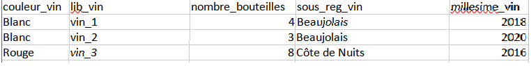

Les données que l’on reçoit ne sont pas toujours prêtes à être utilisées. Avant toute analyse, il est souvent nécessaire de passer par une étape de nettoyage : suppression des lignes contenant des valeurs manquantes, suppression des doublons, ou encore correction des erreurs de format. Pour rendre les données plus lisibles et mieux structurées, on peut également créer une base de données relationnelle à partir d’un tableau Excel ou d’un fichier brut.
C’est ce que nous avons fait dans ce projet : à partir d’un tableau Excel initial, nous avons extrait plusieurs tables pour construire une base de données claire, cohérente, et interrogeable via des requêtes SQL.
Tableau d'origine :
Quelques tables créées à partir du tableau initial :

Ici, par exemple, la colonne id_vin permet de faire le lien avec la colonne lib_vin dans une autre table.
Ces liens entre tables sont essentiels dans une base de données relationnelle, car ils permettent d’effectuer des jointures et des requêtes efficaces.
Nous avons utilisé la commande CREATE TABLE pour créer les structures de nos tables, comme dans l'exemple ci-dessous :
CREATE TABLE vins ( lib_vin CHARACTER, sous_reg_vin CHARACTER, id_vin CHARACTER );
Ensuite, nous avons importé ces tables dans un serveur PostgreSQL (aujourd’hui désactivé) et inséré les différentes lignes de données. Cela nous a permis de faire des requêtes précises, comme celle-ci :
SELECT * FROM vins WHERE sous_reg_vin = 'Beaujolais';
Cette commande nous retourne tous les vins associés à la sous-région "Beaujolais".
Ce projet nous a montré l’importance d’avoir une base de données bien structurée pour garantir la qualité des analyses futures. Néanmoins, la phase de transformation du tableau initial en plusieurs tables a été plus complexe que prévu, car le tableau d'origine était assez volumineux et contenait beaucoup d'informations répétitives .
Par ailleurs, nous avons aussi constaté que des erreurs simples dans la déclaration des types de données (par exemple, utiliser "CHARACTER" qui est un type de variable assez volumineux pour pas grand chose au lieu de types plus adaptés comme "VARCHAR" qui définient le nombre de caractères ou "INTEGER" qui correspond aux nombres entiers) peuvent ralentir le système ou engendrer des erreurs lors des requêtes. Cette expérience nous a donc sensibilisés à l’importance de la rigueur dans la conception d’une base de données et de la précision dans l’écriture SQL.